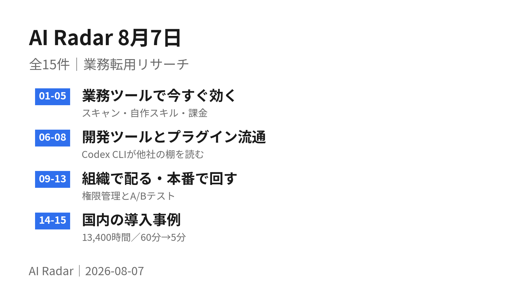
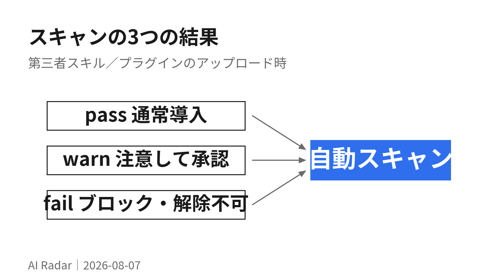
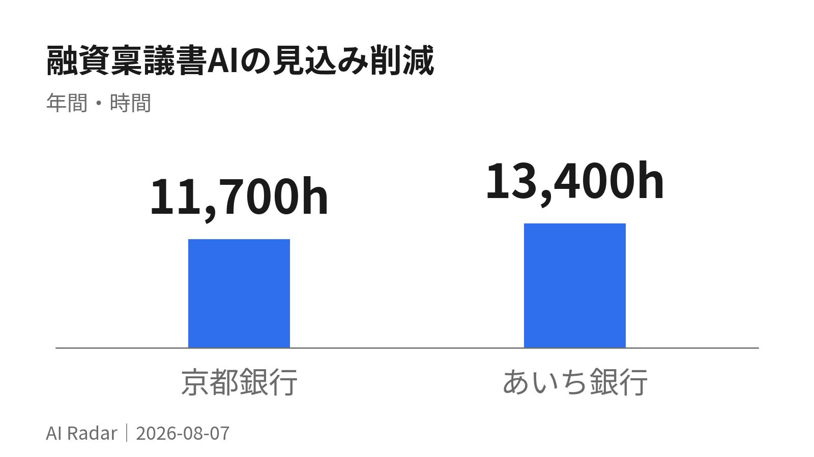
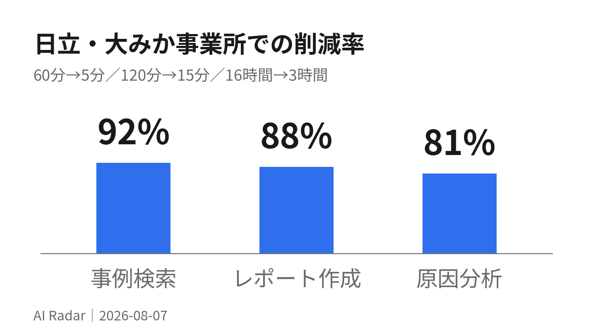

AI Radar 8月7日

全15件を4つに分けた。01〜05は今日から触れる機能（Claudeがスキルとプラグインをアップロード時に自動スキャンするようになった、PowerPointのCopilotがOneDriveの自作スキルを読む、など）。
06〜08は開発ツールとプラグインの流通。Codex CLI が Amazon Bedrock と Claude Code のプラグインマーケットプレイスを読みにいく。ベンダーの垣根がまた1つ下がった。
09〜13は組織で配る／本番で回すための管理機能。AgentCore が本番トラフィックをA/Bで割ってプロンプト改善を検証できるようになったのがいちばん実務的。
14〜15は国内事例。年間13,400時間、事例検索60分→5分。気になるものだけ開いてほしい。
業務ツールで今すぐ効く
01Claude、第三者スキルとプラグインを pass / warn / fail の3段階で自動スキャン
8月6日の更新。Enterpriseプランでスキルとプラグインのセキュリティスキャン（ベータ）が使えるようになった。第三者のスキル／プラグインがアップロードまたは編集された瞬間に中身を検査し、pass（そのまま導入）／warn（注意バナーを承認すれば使える）／fail（ブロック、上書き不可）の3値を返す。スキャンは1〜2分、追加費用なし。
かんたんに言うと外から持ってきた作業マニュアルを、使う前に自動で中身チェックしてくれるようになった。危ないものは赤信号で止まる。
詳しく読む

既定はオフで、OwnerかPrimary Ownerが「組織設定 > スキル」から有効化する。カスタムロールを使っていれば、ロール単位で適用範囲を絞れる。
対象外がはっきり書かれているのが実務的に重要。すでに組織に入っているスキル／プラグインは対象外（有効化しても既存のものは止まらない）。Claudeに作らせたスキル、MCPサーバー経由で共有されたスキル、MCPサーバー本体、フックも対象外。CMEK・ZDR・HIPAA構成の組織も従来どおりスキャンなしで導入する。
fail は本人も管理者も解除できない。誤検知だと思う場合は「編集して再アップロード」しかない（同一内容の再アップロードは結果もキャッシュから同じものが返る）。
スキャン中の中身は通常のセッションから隔離された環境で処理され、走査後にコピーは削除、結果とメタデータだけが残る。
検出範囲も限定されている。狙っているのは「与えられた権限を悪用して、データを本来行くべきでない場所に静かに移す」型の第三者スキルだけ。pass は「その脅威が見つからなかった」であって「安全の保証ではない」と明記されている。
自分でSKILL.mdを書いて運用しているなら、この機能の対象外リストのほうが効く情報。「Claudeに作らせたスキル」と「MCP経由のスキル」は検査されないので、外部由来のスキルを取り込む導線がどれかを一度棚卸ししておくとよい。
出典: Get started with skill and plugin scanning / Release notes — August 6, 2026
02PowerPoint の Copilot が OneDrive の自作スキルを読む
Microsoft 365 Copilot の8月展開。Copilot in PowerPoint にカスタムユーザースキルが入った。自分でスキルを作って OneDrive に置き、更新できる。繰り返し出す指示を、使い回せるガイダンスに変えられる。OneDrive 保管のユーザー定義スキルは7月下旬から順次展開されている。
かんたんに言うと「うちの資料はこう作る」というメモを置いておくと、PowerPointのAIが毎回それに従うようになる。Excelで先に入った仕組みが、スライドにも来た。
詳しく読む
同じ8月展開で、Microsoft 365 ブランドキット（ロゴ・アイコン・テーマ・フォント）を Copilot in PowerPoint から直接使えるようになる。ブランド管理者側が正式なキットを更新・配布する形なので、資料ごとにロゴを探す作業が消える。
Excel の SKILL.md と同じ流れが PowerPoint に来たということは、手順書の置き場所をOneDriveに統一すれば複数アプリで効く。既存の資料作成ルールを1本のスキルに書き出して、まずPowerPointで試すのが早い。
03ChatGPT Enterprise のモデル選択が Medium / High / Extra High に。Excel・Sheets はトークン課金へ
ChatGPT Enterprise・Edu のモデルピッカーが更新され、Thinking Standard → Medium、Thinking Extended → High、Thinking Heavy → Extra High に名前が変わった。ワークスペースで使えるモデル自体は変わらず、速度と推論の強さのバランスだけを選ぶ形になる。
かんたんに言うと「どのくらい念入りに考えさせるか」を3段階から選ぶ形に整理された。名前が分かりやすくなっただけで、使えるAIの種類は変わっていない。
詳しく読む
課金も変わる。ChatGPT for Excel / Sheets のタスクがトークンベースのクレジット課金になり、固定クレジットではなく入力トークン・キャッシュ入力トークン・出力トークンで計算される。ChatGPT for PowerPoint は8月6日まで Enterprise で無料、以降は Excel / Sheets と同じ課金方式に入る。
04OpenAI Atlas が8月9日に停止。ブラウザ機能は ChatGPT と Codex に吸収
Atlas は2026年8月9日で動作しなくなる。 OpenAI はブラウザベースのエージェント機能を ChatGPT と Codex 本体に取り込む方針で、独立したブラウザ製品を畳む形になる。あわせて 8月30日に DALL·E GPT を廃止（残したい画像は事前にダウンロードが必要）。
かんたんに言うと専用ブラウザは終わりで、その機能は本体アプリの中に移る。使っていた人は移行が要る。
詳しく読む
実際、7月30日のデスクトップアプリ更新（26.727）で内蔵ブラウザのアドレスバーから履歴を辿れる／履歴をChatGPTに検索させられるようになり、Chrome拡張から開いているタブを参照する導線も入っている。機能そのものは消えず、置き場所が変わる。
出典: ChatGPT Enterprise & Edu - Release Notes / ChatGPT & Codex changelog
05Google Meet の自動議事メモが、投影スライドのスクショを貼るようになった
8月3日から順次展開。Google Meet の「Take notes for me（自分用のメモを取る）」が、会議中に投影された内容のスクリーンショットを自動で取り込み、議事メモのドキュメントに直接差し込むようになった。
かんたんに言うと会議の自動メモに、画面共有された資料の画像が一緒に残る。「あのとき出てたグラフ、どれだっけ」が減る。
詳しく読む
同時期に Google ドライブのWeb版で動画へのタイムスタンプ付きコメントが入った。動画の特定の時刻にコメントを紐づけられる。
開発ツールとプラグインの流通
06Codex CLI 0.146、Amazon Bedrock と Claude Code のプラグインマーケットプレイスを読む
7月29日リリースの Codex CLI 0.146.0 に、Agent Plugins マニフェストのサポート、ワークスペース単位のプラグイン公開、そして追加のプラグインマーケットプレイス（Amazon Bedrock と Claude Code） が入った。OpenAI のCLIが、他社のプラグイン置き場を読みにいく形になる。
かんたんに言うと道具箱の中身を、よそのメーカーの棚からも取ってこられるようになった。ツールごとに同じ道具を作り直さなくてよくなる方向。
詳しく読む
同じリリースでスキル周りも動いている。実行環境側が提供するスキルを発見し、関連リソースを安全に読めるようになった（明示的に選択されたスキルを含む）。バグ修正側には「コンテキスト予算が厳しいときに、利用可能なスキルをより多く保持し、スキルカタログを切り詰めざるを得ないときは警告を出す」という項目がある。スキルを増やしすぎると黙って落ちていた挙動に、警告が付いたということ。
セッション管理も変わった。/new や /clear で新しいセッションに名前を付けられる、重要なスレッドをピン留めできる、サイド会話を閉じずに切り替えられる。スレッドのフォーク（ページ分割された履歴つき、スレッド一覧に出ない一時フォークも可）も入った。
「スキルカタログの切り詰め警告」は、SKILL.md を何本も持っている人には直接効く。スキルが多すぎて読まれていないという状況が、これまでは無言で起きていた。数を増やす前に、警告が出ていないか確認する運用にしておくとよい。
出典: ChatGPT & Codex changelog — Codex CLI 0.146.0（2026-07-29）
07Codex 0.146.1、サイバー能力の高いモデルには自動レビューの既定を安全側へ
8月5日の Codex CLI 0.146.1。サイバー関連の能力が高いモデルに対して、自動レビューの既定値をより安全な側に振り、権限の変更点をターミナル上で説明するようになった。バグ修正1件だけのリリース。
かんたんに言うと危ないことができてしまうAIを使うときは、勝手に進める範囲を自動で狭める。しかも「いま何を制限したか」を画面に出す。
08Sign in with ChatGPT がベータ開始。Airtable・GitLab・HubSpot・Notion・Supabase・Vercel から
7月29日。Sign in with ChatGPT が一部プラグインとパートナーサイトでベータ提供に入った。初期対応は Airtable、GitLab、HubSpot、Notion、Supabase、Vercel。ChatGPTのプラグインディレクトリから対応プラグインをつなぐとき、少ない手数でアカウント作成・連携ができる。
かんたんに言うと「Googleでログイン」のChatGPT版。つなぐ手間が減るが、権限の確認は今までどおり自分でやる必要がある。
詳しく読む
サインイン時にパートナーに渡るのは名前・メールアドレス・プロフィール画像だけで、各プラグインが要求するアクセス権の承認は別ステップとして残ると明記されている。
出典: ChatGPT & Codex changelog — Sign in with ChatGPT (beta)（2026-07-29）
組織で配る・本番で回す
09Claude Enterprise、使えるモデルと「考える強さ」を管理者が指定できる
7月1日の更新。Enterpriseプランの管理者が、メンバーがどのモデルにアクセスできるか、どのeffort level（推論の強さ）設定を使えるかを制御できるようになった（ベータ）。
かんたんに言うと「この部署は速いモデルだけ」「この用途は念入りに考えるモードを許可」といった線引きを、管理側で引けるようになった。
10M365 Agent Builder、SharePointリストを知識源に。1エージェント1リスト・2万件まで
Microsoft 365 Copilot の Agent Builder が、SharePointリストをエージェントの知識源として使えるようになった。構造化されたリストのデータにエージェントを紐づけ、利用者がそのリストの中身に基づいた回答を得られる。
かんたんに言うと社内で管理している一覧表を、AIが直接読んで答えられるようになった。ただし今のところ1体につき1つの表まで。
詳しく読む
制限が明記されている。1エージェントにつき参照できるSharePointリストは1つ、最大20,000アイテムまで。他の知識源タイプとの併用は可能。リストの添付ファイルとルックアップ列は未対応。
11自作エージェントを Agent Store に申請できる。管理者レビューを通ってから公開
Agent Builder で作ったエージェントを、Agent Store の「Built by your org」区分に申請できるようになった。Microsoft 365 管理センターで管理者がレビュー・承認したうえで公開される。
かんたんに言うと誰かが作った便利なAIを、社内で正式に配れるようになった。ただし配る前に管理者のチェックが1回入る。
詳しく読む
同じ更新群で、Copilot Prompt Gallery の全社公開も入っている。自社の業務に合わせたプロンプト集を組織で作り、テナント内の全ユーザーに配布できる。
12AgentCore Optimization がGA。本番トラフィックをA/Bで割って、プロンプト改善を実データで検証する
Amazon Bedrock AgentCore に Optimization が入り、「観測する→評価する→改善する」のループが閉じた。3つの機能で構成されている。
かんたんに言うとAIの指示文を直したとき、「本当に良くなったのか」を実際の利用の半分で試して数字で確かめられるようになった。テスト環境の結果だけで判断しなくてよくなる。
詳しく読む
Recommendations は、本番のトレースと評価結果を分析して、システムプロンプトとツール説明への具体的な改善案をAIが出す。実際のエージェントの振る舞いに根拠を置く。
Batch evaluation は「何を良しとするか」を先に定義し、候補となる変更を規模を持って測る。
A/B tests が本番の要。ライブの本番トラフィックを分割して、エージェントのバージョン同士を並べて比較する。全体展開に踏み切る前に「テストデータ上ではなく本番で効いている」という統計的な証拠を取る。
提供状況は、バッチ評価・推奨・A/Bテストが14リージョンでGA、失敗／意図／軌跡のインサイトが13リージョンでプレビュー。AgentCore ランタイムに限らず、AWS Lambda、Amazon EKS、AWS外の環境で動くエージェントでも使える。
自作エージェントの改善が「直した→たぶん良くなった」で止まっているなら、A/B分割の考え方だけでも先に入れる価値がある。プロンプトを2版持って、実際の依頼を半々で流し、結果を採点する。基盤を乗り換えなくても手動で回せる形。
出典: Amazon Bedrock AgentCore introduces new optimization capabilities to continuously improve agents in production / AgentCore optimization: Improve agent quality loop with recommendations and A/B tests
13Gemini Enterprise、Memory Bank の「メモリプロファイル」がGA。ログにユーザーIDが付く
Gemini Enterprise Agent Platform の更新。Memory Bank のメモリプロファイルが一般提供（GA）になった。静的なスキーマを持つデータ構造を、LLMで埋めて更新していく形の「構造化プロファイル」を生成できる。
かんたんに言うとAIが利用者ごとの情報を、決まった項目に整理して覚えておける。自由記述のメモではなく、記入欄のある台帳に近い。
詳しく読む
運用面では、「プロンプト入力と応答出力のログ記録を有効にする」をオプトインしたとき、エージェントのログにユーザーIDが含まれるようになった。異常なツール呼び出しを追いやすくするための変更。あわせて Grok 4.1 系（xai/grok-4.1-fast-reasoning ほか）は8月20日で停止が告知されている。
国内の導入事例
14あいち銀行、融資稟議書AIで年間13,400時間。審査役の指摘が約25%減
7月9日発表。NTTデータがあいち銀行に融資稟議書作成AIサービスを7月27日から提供開始する。RAGの「LITRON Generative Assistant on finposs」を使い、行内の複数システムに散らばる顧客概況・財務情報を横断的に集めて、稟議書の素案を自動生成する。試行利用の結果、最大で年間13,400時間の業務削減を見込む。
かんたんに言うと銀行がお金を貸すかどうか決める申請書を、AIが下書きする。あちこちのシステムから情報を集める作業がなくなり、書き方のばらつきも減る。
詳しく読む

数字で押さえるべきは削減時間より「審査役による稟議書評価で、従来の指摘数から約25%削減」のほう。速くなっただけでなく、差し戻しの原因そのものが減ったという主張になっている。
背景が具体的で参考になる。あいち銀行は2025年1月に銀行統合しており、統合前の両行で審査プロセスも融資判断の観点・評価基準も違った。稟議書の記載粒度と構成が揃わないことが課題だった。そこで「融資判断で押さえるべき観点」をあらかじめ整理してからAIに書かせる設計にしている。効率化の道具ではなく、業務標準化の道具として入れているのがこの事例の肝。
先行する京都銀行（2026年2月発表）では、稟議書に対する審査役評価の合格ライン到達率が約30%から約95%へ向上し、最大で年間11,700時間の削減を見込むとされている。あいち銀行は本サービスの採用2行目、法人営業から融資審査までの一連プロセス支援としては3例目の商用採用。
「AIに書かせる前に、判断の観点を人間側で再整理した」という順番がそのまま使える。出力の質を上げたいときに触るのはプロンプトではなく、その前段の観点リスト。組織が2つ以上あって書き方が揃わない場面には特に効く。
出典: 金融機関向けの融資稟議書作成AIサービスをあいち銀行に提供決定（2026年7月9日） / 同・京都銀行への導入決定（2026年2月25日）
15日立、トラブル事例検索が60分→5分。レポート120分→15分、原因分析16時間→3時間
6月4日発表。日立が品質保証業務向けのAIエージェント「品質ナレッジシステム」を HMAX Industry のラインアップとして2026年4月より提供開始した。機器故障などのトラブル発生時に、過去の対応記録の検索と対応レポート作成を支援する。
かんたんに言うと「昔これと同じ故障があったはず」を探す作業を、AIが肩代わりする。ベテランしか知らなかった探し方を、AIに教え込んである。
詳しく読む

自社の大みか事業所（茨城県日立市）にカスタマーゼロとして先行導入した結果が具体的に出ている。事例検索が1件あたり60分→5分（約9割削減）、対応レポート作成が120分→15分（8割以上）、不具合の原因分析が16時間→3時間（8割以上）。
作り方が本題。熟練者がどのようなキーワードや順序で情報を探索し、判断してきたかという業務プロセスを分析し、暗黙知を形式知化してAIに組み込んでいる。日立の「Generative AI センター」が、熟練者の業務知見100件以上をAIへ組み込み、プロンプトの改善とチューニングを重ねた。検索対象の資料を増やしたのではなく、探し方を移植したという構図。
対象はOT領域。大みか事業所が扱うエネルギー・モビリティ・産業のシステムは10年以上稼働することが多く、保守運用の情報が膨大に溜まる一方、そこから引き出す作業が熟練者依存になっていた。
「資料を全部AIに読ませる」ではなく「探し方の手順をAIに書き起こす」という発想が転用できる。自分が何かを調べるとき、どの順でどのキーワードを打つかを100件書き出せば、それがそのままスキルになる。日立がやったのは規模の大きい同じことでしかない。
出典: 日立、熟練ノウハウを形式知化し、品質保証業務を大幅に効率化するAIエージェントをHMAX Industryとして提供開始（2026年6月4日, PDF）
検証の深さ: 本文を web_fetch して数字・機能名を確認したのは 01（スキャン仕様の対象外リストまで）、06・07・08（Codex changelog 本文）、10・11（M365リリースノート本文）、14（NTTデータ発表全文）、15（日立プレスリリースPDF全文）。02・03・04・05・09・12・13 は検索結果の見出しレベルで裏を取り、出典URLの実在は確認済み。
国内の定量事例: 「2026年8月」で切って検索すると、出てくるのはセミナー告知とSEO目的のまとめ記事ばかりで、一次ソースまで辿れる定量事例が見つからなかった。角度を変えて金融・製造の個別ベンダー発表に寄せた結果、NTTデータ（7月9日）と日立（6月4日）に行き着いた。8月の国内一次情報はまだ薄い。
Notion: MCPが議事録とブロックコメントに対応し、データベース作成・更新が91%トークン効率化した件を追ったが、5月13日の Notion 3.5 の内容で、7月31日号ですでに扱った範囲と重なるため見送った。
Anthropic Economic Index「Cadences」（6月26日、約9,700人の回答を利用データに紐づけ）は、「週末は仕事の質問が減るが高収入の職種ほど減り方が小さい」といった生活リズムの分析が中心で、業務転用の判断軸に乗らなかったため落とした。
Hugging Face: Thinking Machines の Inkling（約1兆パラメータ、100万トークンコンテキスト、画像・音声・テキストをネイティブ入力）が公開されているが、モデルの性能発表であって「明日から業務に転用できるか」の基準に届かないと判断した。